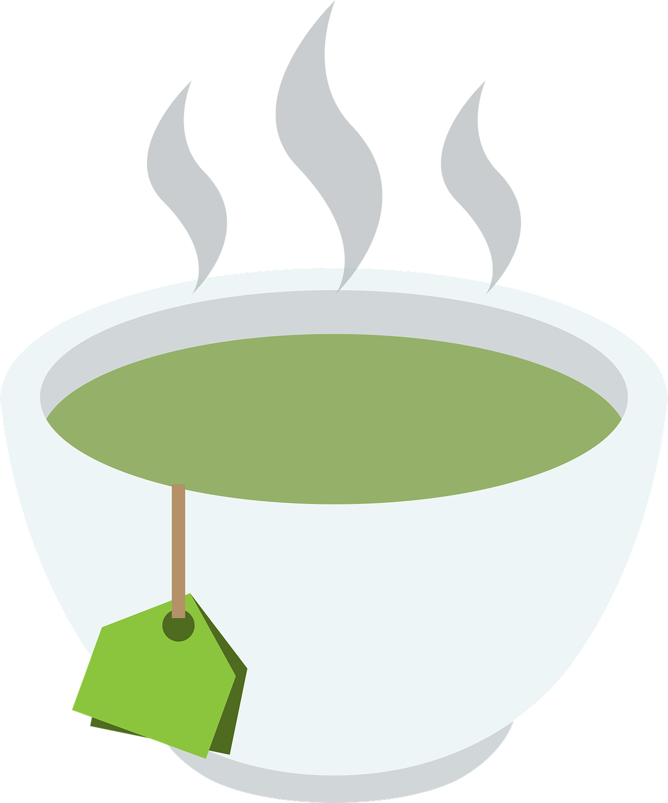

녹차(綠茶)는 다양한 건강상의 이점과 풍부한 맛으로 인해 전 세계적으로 사랑받는 차 종류 중 하나입니다.
주로 중국과 일본에서 유래된 녹차는 시그노핀이라는 차나무의 잎을 수확하여 가루 혹은 잎 형태로 가공합니다.
색상 : 녹차의 이름처럼 짙은 녹색을 띠고 있습니다. 이는 차잎이 살려진 상태로 가공되기 때문입니다.
맛과 향 : 고유한 풀 향과 신맛을 가지고 있으며, 다양한 풍미를 즐길 수 있습니다. 미각과 후각에 특히 좋은 인상을 남깁니다.
카페인 함량 : 녹차는 홍차보다 카페인 함량이 낮습니다. 따라서 카페인 섭취를 줄이고 싶은 사람들에게 적합합니다.
항산화 작용 : 녹차에는 강력한 항산화 물질인 카테킨이 풍부하게 함유되어 있습니다. 항산화 작용으로 인해 세포 손상을 방지하고 면역 시스템을 강화하는 데 도움을 줍니다.
심혈관 건강 개선 : 녹차에는 심혈관 건강에 도움이 되는 폴리페놀과 카테킨이 함유되어 있습니다.
혈압을 조절하고 혈관을 확장하여 심혈관 질환 위험을 줄이는 데 도움이 됩니다.
대사 촉진 : 녹차는 대사를 촉진하여 체중 관리에 도움을 줄 수 있습니다.
진정 효과 : 아미노산인 L-테아닌이 녹차에 함유되어 있어 진정 효과가 있을 수 있습니다.
클릭하여 마시기 